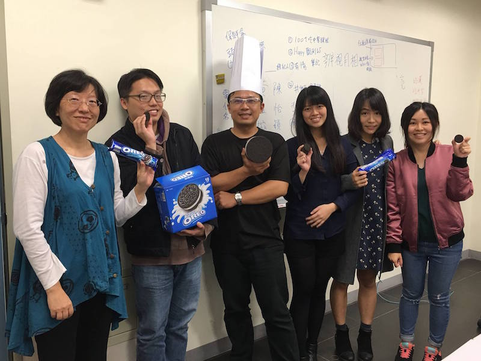

左起，陳麗卿、楊凱翔、葉鈞喬、周妘珊、黃品榕、陳怡穎。
葉鈞喬
10項以上教案設計得獎經驗
103年青年節新竹地區社會優秀青年楷模(教育專業類)
北大創業創新中心競賽，獲得入選進駐創業創新中心
51屆分區科學展覽會佳作(2010)
資訊科技融入教學資源創意應用-優等(2011)
12年國民基本教育教學典範教案競賽-佳作(2012)
基礎地球科學教材設計競賽-專業社群優良示例組-特優(2012)
成立新竹區第一個高中氣象播報團隊-藍蝶氣象播報團(2013) 帶領本團成功加入國際級科學教育計畫「臺美全球學習與觀測裨益環境計畫(GLOBE計畫)合作協定」
103年青年節新竹地區社會優秀青年楷模(2014)
參與北大創業創新中心競賽，以「綠亞灣-綠色產業創業投資顧問網路平台」獲得入選進駐創業創新中心(2015)
雜學校獲選參展--學校體制創新組(2016)
陳斐卿
亞卓市網路科展探究式學習創辦者
數學擬題一題多磨式課程模組開發者
高中職校務評鑑委員
科技部資訊教育學門複審委員
科學教育學刊、教育研究集刊期刊編輯
國際與國內期刊審查委員
楊凱翔
參加宣教黑客松，獲得技術獎
協助新眼光電視台製作APP
開發多款APP工具
協助偏鄉教會製作網站
陳怡穎
Parallel Memory Project 聯展 (英國,諾丁漢當代美術館) 2015
Residências Artísticas FBAUL 駐村藝術家聯展 2015
Exhibit Here 聯展 (英國, 倫敦Menier 藝廊) 2016
Formation 雙個展 (英國,諾丁漢Lace market藝廊) 2016
Crisis Interlude 畢業展(英國,諾丁漢 Sneinton Market藝廊)2016
黃品榕
Arisia亞揚國際行銷實習生
TEDXNCU 公關
北歐櫥窗北歐特派員/專欄作家
AIESEC波蘭中文教學實習生
Morehead State University ESL Teaching Assistant
行政院科技部教科會計畫兼任助理
周妘珊
德國 Friedrich-Schiller-Gymnasium Teaching Chinese as Second Language 實習生
TutorMing兼職華語教師
日籍生一對一華語教學
空中美語全科輔導老師
知識糖果社群媒體行銷短文撰寫